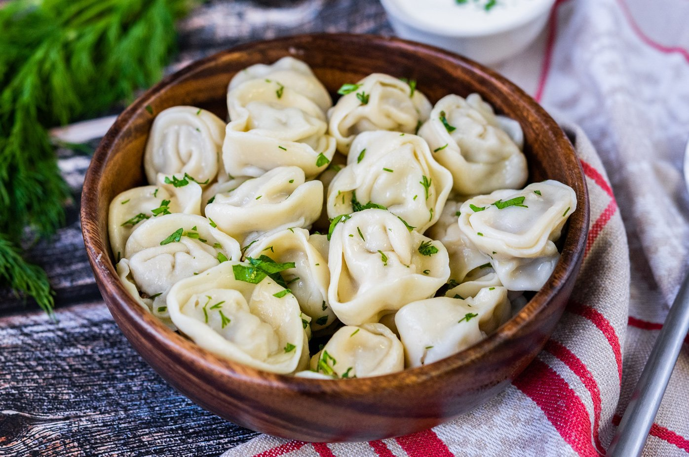

Кулинарный цех "Пирожок" 
Блюда по домашним рецептам - вам понравится!
Пельмени домашние

Домашние пельмени - классическое блюдо,
которое всегда радует своим неповторимым вкусом и теплом.
Ингредиенты:
- Говядина
- Свинина
- Лук
- Соль и перец
- Вода
- Мука
- Яйца
Рецепт приготовления:
- Подготовьте фарш: перемелите говядину и свинину, добавьте мелко нарезанный лук, соль и перец по вкусу.
- Приготовьте тесто: смешайте муку с яйцами и небольшим количеством воды. Замесите упругое тесто.
- Раскатайте тесто и вырежьте круглые лепешки.
- Начините каждую лепешку фаршем и аккуратно закройте, скрепив края.
- Поставьте пельмени в кипящую подсоленную воду и варите до готовности, около 5-7 минут.
- Выложите готовые пельмени на тарелку и подавайте горячими, приправленными маслом или соусом по вашему вкусу.